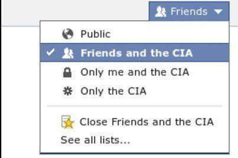
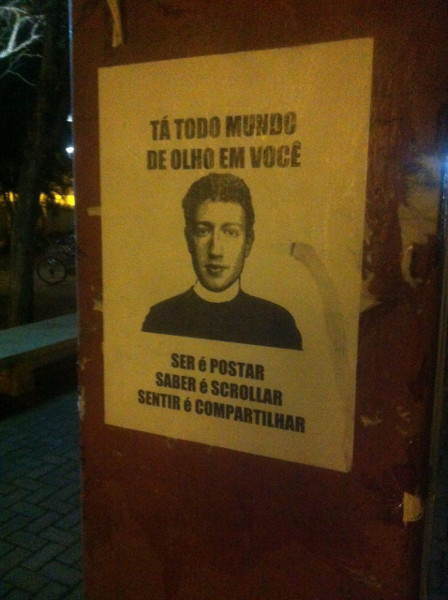
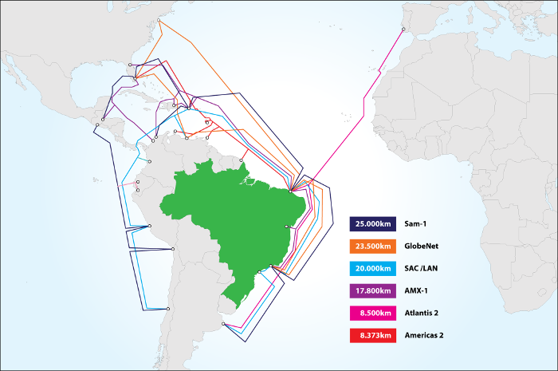
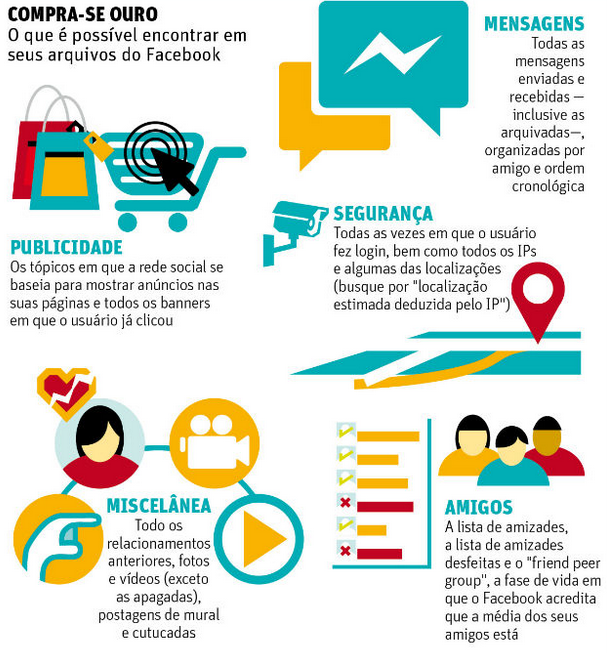
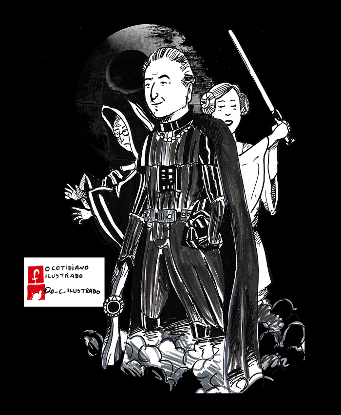
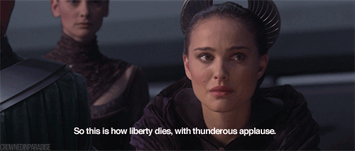

O mundo cada vez mais conectado através de cabos ópticos submarinos de alta velocidade e a popularização dos smartphones possibilitaram a internet cada mais acessível e intensificaram o fluxo de troca de conhecimento e informação pela rede.
Apesar disto, em 2015 apenas 50% dos domicílios brasileiros tinham acesso à rede e entre os motivos para não ter internet o alto custo foi o mais citado. Uma pessoa sem acesso à rede é facilmente excluída do mercado de trabalho (se não substituída por máquinas automatizadas), privada do imenso conhecimento gratuito disponível e entre outras implicações, ou seja, 50% dos domicílios são socialmente excluídos e provavelmente possuem outras prioridades mais básicas do que a internet.
O acesso a internet é um direito humano
A internet nada mais é que um conjunto de inúmeros computadores interligados e diferente das telecomunicações comuns como o telefone e TV, foi estabelecida devido as conexões entre milhares de pessoas comuns. A internet é feita por pessoas e sempre foi um espaço democrático e com uma pluralidade de ideias.
São inúmeras suas possibilidades e todo mundo deve ter direito de usufruir do acesso à rede.
Nem tudo são flores
Apesar de toda a maravilha de conhecimento e informação de 0 e 1 que percorre na rede, o contexto daqueles que acessam à rede não é otimista. Um breve resumo das violações mais discutidas:
Vigilância global

Sempre houve grampos e interceptação das comunicações de importantes chefes de governo, não deveria ser normal mas sempre ocorreu. O mais assustador é quando todo o poder de processamento de data centers gigantes é usado para espionar pessoas comuns, as quais não estão envolvidas com nenhum crime e sem nenhuma autorização judicial. Além de ilegal e imoral, a justificativa do combate ao terrorismo é sempre usada como uma carta na manga e para assim possibilitar a obtenção de vantagens econômicas e institucionalizar a repressão. Caso esteja interessado em saber mais, leia o post de Criptografia de E-mails.

Cabos submarinos
A conexão da internet é feita através de cabos ópticos submarinos, exceto em regiões remotas, as quais usam satélites como a Amazônia que apenas recentemente teve a implantação de cabos ópticos.
Existem 6 cabos no Brasil sendo 3 de empresas privadas, os outros 3 são o Atlantis 2, Americas 2 e Sam-1.
Muitos cabos no mundo são construídos através de parcerias de estatais com empresas privadas e há muito mistério envolvido, não há maiores detalhes de domínio público sobre os contratos estabelecidos e as arquiteturas de rede utilizadas do cabo até o provedor.
O Atlantis 2 é o único cabo que liga diretamente o Brasil com a Europa porém é um cabo extremamente limitado e que prioriza sinais de voz ao invés de internet, devido à limitação a Telebras anunciou recentemente a construção de mais um cabo direto com a Europa.
Restam apenas o Americas 2 e Sam-1 e os quais passam pelos Estados Unidos, ou seja, toda a comunicação é interceptada. Por exemplo, ao se conectar com a Ásia ou Uruguai obrigatoriamente os dados são interceptados pelos EUA, principalmente através do Programa Echelon. Alguns documentários descrevem este processo como uma "duplicação" do feixe de luz do cabo de óptica, o dado segue o destino normal mas uma cópia foi feita e desviado do seu destino.
O Brasil não possui nenhuma independência das suas comunicações e não é possível uma conexão com países do Mercosul sem que os dados passem pelos EUA, é uma posição política permitir que os dados sejam interceptados principalmente quando há relações comerciais importantes.

Lei antiterrorismo
Evidentemente a lei antiterrorismo é um desastre total desde o início e recentemente ela vêem sido usada como respaldo para inúmeras prisões ilegais, usada para justificar a prisão de manifestantes e está sendo cada vez mais usada para o que seriam crimes cibernéticos. Numa tentativa de se promover para pré candidato a governador do Estado de São Paulo, o ministro interino Alexandre de Moraes montou todo o circo convocou toda a impressa para anunciar a prisão de "acho que talvez podem ser supostos terroristas". Os supostos terroristas são descritos como amadores e estariam planejando no Whatsapp comprar uma arma, é notável nas entrevistas o total desconhecimento de como foi a investigação pois não há maior detalhamento além de descrições superficiais. Para aqueles que acreditam na criptografia do Whatsapp, este é um ótimo exemplo.
O perigo do abuso das leis e do poder é evidente no caso de pessoas que são presas por criticar à Polícia Militar como instituição na internet, é importante notar que liberdade de expressão não é discurso de ódio e todos podem se manifestar.
CPI dos crimes cibernéticos
Conhecida como a CPI da censura, os primeiros relatórios propunham permitir o acesso de autoridades policiais as informações de IP como nome e endereço sem nenhuma autorização judicial. Após muita pôlemica, o texto foi retirado do relatório final da CPI porém não há nenhuma comemoração: leis semelhantes foram aprovadas, "Obtenção de meios de prova nos crimes praticados por intermédio de conexão ou uso de internet" e "Comissão aprova acesso de polícia militar a sistemas de informações sobre cidadãos"
O objetivo desta CPI foi garantir o direito das licenças copyrights e o combate a pirataria, os principais absurdos aprovados foram:
- Criminalizar qualquer um que invada um "sistema informatizado" mesmo que não haja obtenção de dados ou vantagem pessoal. Ou seja, caso você descubra alguma falha de segurança e reporte o erro pode ser criminalizado.
- Permitir a prisão de quem violar os termos de uso que são confusos propositalmente para ninguém ler
- Determinar o bloqueio do acesso a sites/apps hospedados fora do país "dedicados à pratica de crimes"
- Destinar a verba que anteriormente seria para fiscalizar as telecomunicações para a Polícia Federal
- Permite o bloqueio de aplicativos, diferentemente do Marco Civil
Foram muitas entidades que participaram efetivamente do debate para tentar impedir a aprovação da CPI e vale a pena acompanhá-los, como o Coletivo Intervozes, Instituto de Tecnologia e Sociedade do Rio e Coding Rights.
A presidenta da CPI
Mariana Carvalho foi a presidenta da CPI e apesar do relatório aprovado ser totalmente retrogrado e articular a censura na internet, ironicamente Mariana Carvalho faz parte da "Frente Parlamentar Mista pela Internet Livre e Sem Limites" cujo o objetivo é impedir a franquia de dados. Obviamente devido a rejeição popular da franquia de dados, Mariana Carvalho contrariou os interesses das grandes empresas que outrora defendeu.
E mais ataques
É essencial que haja uma proteção dos direitos dos usuários na rede através de leis e fiscalização, grandes empresas de telecomunicações e políticos não são proprietários da rede para ditar regras e os seus interesses acima de tudo.
Vivemos em uma época baseada em ciência e tecnologia com formidáveis poderes tecnológicos. A ciência e a tecnologia estão nos levando adiante a velocidades cada vez maiores. E se não as entendemos e por "nós", eu quero dizer o público em geral. Se você diz: "Ah, não sou bom nisso, não sei nada sobre isso." Então quem está tomando todas as decisões sobre ciência e tecnologia que determinarão em que tipo de futuro nossos filhos viverão? Esta mistura inflamável de ignorância e poder cedo ou tarde irá explodir em nossas caras. - Carl Sagan
Desde 2014 o Marco Civil sofre uma série de ataques, o inimigo número 1 daquele ano possuia nome e sobrenome: Eduardo Cunha.
O qual é financiado pelas empresas de telecom e defende o seus interesses como retorno dos investimentos feitos.
Elaborado coletivamente, o Marco Civil é um exemplo mundial de princípios e diretrizes da rede e elogiado por diversas entidades e especialistas. Houve muito debate e participação popular para a elaboração, alguns itens como a neutralidade de rede, direito a privacidade e a suspensão da conexão somente em falta de pagamento desagradou as empresas.
A neutralidade garante que nenhum pacote de dados tenha prioridade maior que outro, ou seja, é ilegal a fragmentação da internet em "pacotes de redes sociais" e associações de operadoras com o Facebook/Twitter/Whatsapp para fornecer o acesso a estes apps de forma "gratuita".
Não há nada de altruísta no Facebook e Google em oferecer "internet" via drone em locais remotos, não se trata de internet quando o acesso é limitado a uma série de sites e alguém estabelece onde você pode navegar ou não em troca de metadados.

Trecho do Marco Civil que impede casos de porn revenge, violação à privacidade das comunicações e a suspensão da internet por limites de dados:
"O acesso à internet é essencial ao exercício da cidadania, e ao usuário são assegurados os seguintes direitos:
I - inviolabilidade da intimidade e da vida privada, sua proteção e indenização pelo dano material ou moral decorrente de sua violação;
II - inviolabilidade e sigilo do fluxo de suas comunicações pela internet, salvo por ordem judicial, na forma da lei;
III - inviolabilidade e sigilo de suas comunicações privadas armazenadas, salvo por ordem judicial;
IV - não suspensão da conexão à internet, salvo por débito diretamente decorrente de sua utilização"
Os bloqueios recentes do Whatsapp fizeram ressurgir com força os ataques ao Marco Civil, comentários dignos de estar no e-farsas.com e que demonstram a ignorância ao denominá-lo como "Censuro Civil Regulatório".
São tempos perigosos e em meio a tantos retrocessos sociais ocorrendo, o Marco Civil já está em risco desde a aprovação da CPI dos Crimes Cibernéticos e mais alterações podem ocorrer.

Comitê Gestor da Internet
O CGI é formado por diversos setores da sociedade, entre eles a sociedade civil, empresas, representantes governamentais, academia etc. Conhecido pelo registro de domínios .br, é responsável por outras atribuições como:
- a proposição de normas e procedimentos relativos à regulamentação das atividades na Internet;
- a recomendação de padrões e procedimentos técnicos operacionais para a Internet no Brasil;
- o estabelecimento de diretrizes estratégicas relacionadas ao uso e desenvolvimento da Internet no Brasil;
É um comitê extremamente importante, a composição plural e democrática desagrada as empresas pois há um claro conflito de interesses quando é necessário o consenso dos diferentes setores da sociedade.
As grandes empresas de telecomunicações não gostam desse modelo pois, no CGI.br, sua opinião é apenas mais uma. Diferentemente da Anatel, onde há investimento em lobby para decisões regulatórias favoráveis, a composição atual do CGI.br torna difícil a captura e garante a paridade de opinião sem importar o poder econômico de cada setor — todos os setores são participantes da Internet e portanto têm iguais direitos de representação. - O Ataque à Governança Democrática da Internet
O governo interino está sendo pressionado para mudar a composição do CGI e consequentemente torná-lo favorável somente aos interesses das empresas de telecomunicações. Dessa forma será possível tornar a internet um "serviço de telecomunicação" e poder limitá-la e restringir o uso com preços abusivos e vendas por pacotes ignorando a função social da internet.

O Cotidiano Ilustrado
Instagram: ocotidianoilustrado
Twitter,
Facebook e
Wordpress
TIC Domicilios
http://data.cetic.br/cetic/explore?idPesquisa=TIC_DOM